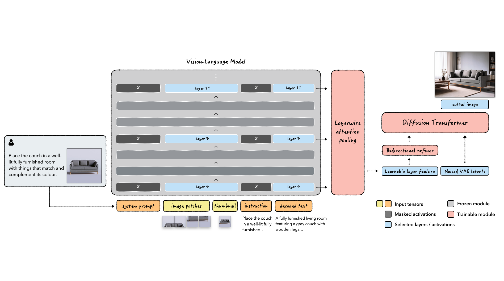
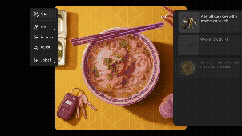
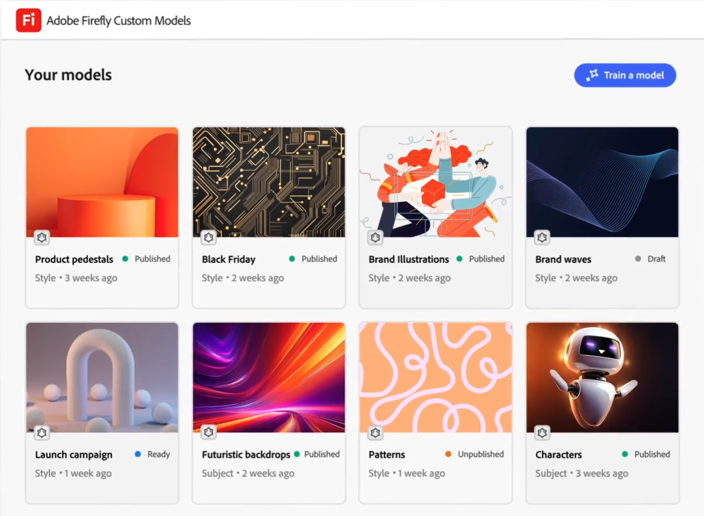
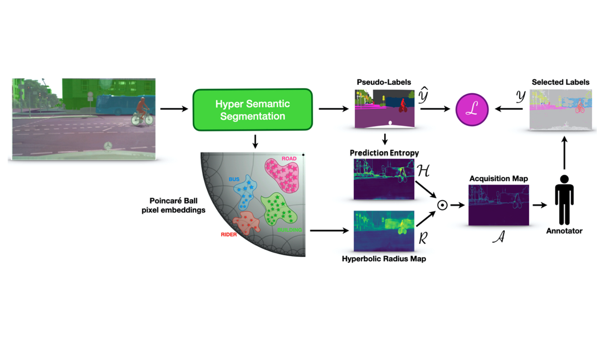
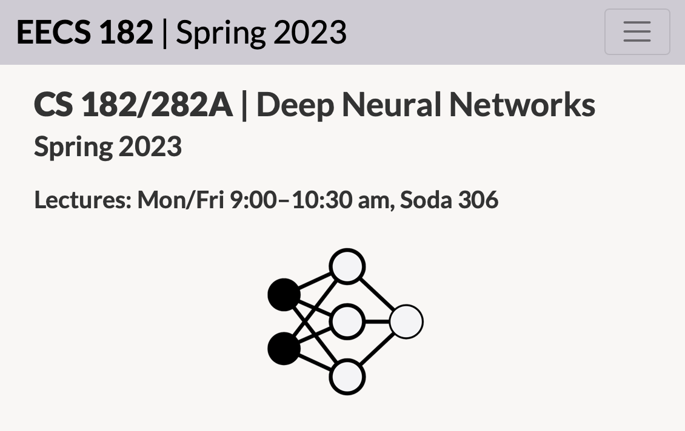

|
Kevin (Yu-Teng) Li I am an Applied Research Scientist at Adobe Firefly, working on foundation model training and multimodal research. Most recently I co-led the multimodal pretraining of Firefly Image 5, which enables instruction editing, character-reference generation, layer generation and text-to-image at 2k resolution. Previously, I graduated from University of California, Berkeley with a B.S. in Electrical Engineering and Computer Sciences, where I did my research in Active Learning in Segmentation under the supervision of Trevor Darrell. Email / CV / Twitter / LinkedIn / Google Scholar |
{kind=link}
Research & Industry Projects |
|

|
UniFusion: Vision-Language Model as Unified Encoder for Image Generation
Yu-Teng Li*, Manuel Brack*, Sudeep Katakol, Hareesh Ravi, Ajinkya Kale ArXiv, 2025 The first architecture that uses only VLM as input-condition encoder without auxiliary signals from VAE or CLIP to do editing. The unified encoder framework enables emergent capabilities such as zero-shot multi-ref generation when trained on single-reference pairs. |
|

|
Firefly Image 5
Multimodal pretraining (textual editing, character-reference generation, layer generation) October 2025 I co-led the training of Firefly Image 5 model for workflows of instruction editing, character-reference generation and layer generation. Throughout model development, I led ablation studies on the architecture and data combinations, and drove decisions on the final production model's training recipe, scaling to ~1000-GPU distributed training on a daily basis (July-Oct 2025). |
|
|
Firefly Image 4
Foundation model pretraining & post-training April 2025 Being part of the foundation model training team of Image 4, I developed recipes for synthetic data handling and aesthetics fine-tuning (SFT), as well as sampling improvements. Firefly Image 4 is, as of Oct 2025, still one of the most advanced text-to-image models in the industry, leading competitors such as Qwen-Image, Runway Gen-4 Image, Luma Photon...etc in "General & Photorealistic" category on Text-to-Image Arena. |
|

|
Firefly Image 3 Custom Models
August 2024 I led the personalization effort of Firefly Image 3 called Custom Models, which enables copyright content generations for Adobe's enterprise customers. I developed the training recipe (e.g. improved Dreambooth's stability with VLM-predicted superclass, improve optimizer memory efficiency) and integrated the finetuning pipeline into prodcution. |
|

|
Hyperbolic Active Learning for Semantic Segmentation under Domain Shift
Luca Franco*, Paolo Mandica*, Konstantinos Kallidromitis, Devin Guillory, Yu-Teng Li, Trevor Darrell, Fabio Galasso ICML, 2024 HALO introduces a hyperbolic neural network approach to pixel-based active learning (AL) for semantic segmentation, and is the first AL method to surpass the performance of fully-supervised baselin on synthetic-to-real domain adaptation benchmarks, with just 1% of labeled pixels. |

|
Neighboring State-based Exploration for Reinforcement Learning
Yu-Teng Li, Justin Lin, Jeffery Cheng, Pedro Pachuca ArXiv, 2022 Inspired by adversarial attack literature, we proposed ρ-explore, a simple but effective on-policy exploration method by surveying a bounded region of nearby states during early training of an agent. Our method consistently outperforms Double DQN baseline by 49% in discrete environments on reward return [code]. |
Teaching |
|

|
CS 182/282A Deep Neural Networks | UC Berkeley
I led the curriculum design of weekly discussion sections in the Deep Learning course at UC Berkeley, with 300+ graduate & undergraduate students in Spring 2023. I also designed various exam and homework questions on denoising diffusion models (DDPM), Transformers, and more. |
{kind=link}
|
Website source code from here. |